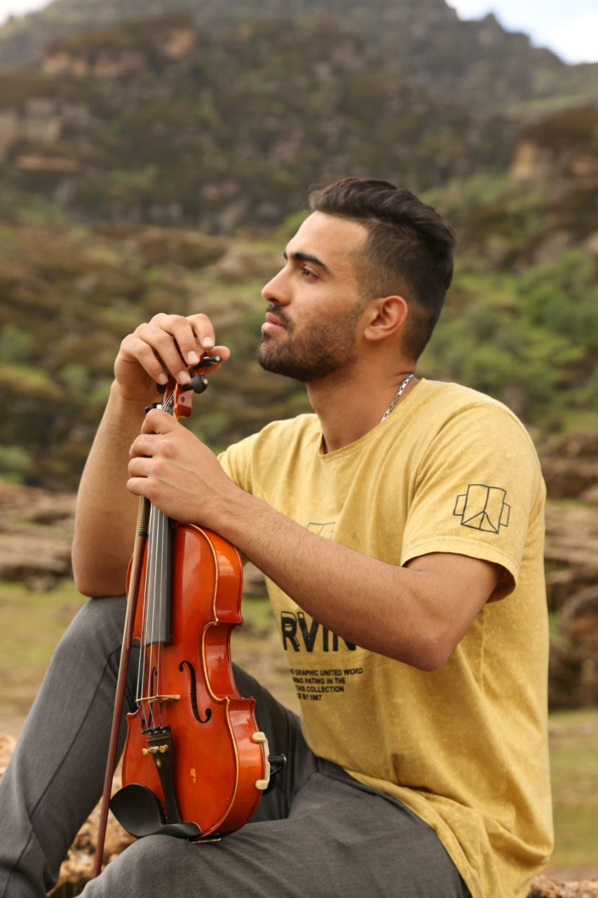

My hobbies
Music has always been a significant passion of mine, and I began playing the violin at the age of 11. This instrument quickly became one of the most meaningful aspects of my life. Beyond giving me the opportunity to perform in orchestras, playing the violin has provided me with a unique perspective on life, helping me stay calm and make better decisions. In 2017, my love for music expanded to include playing the guitar and composing electronic music. One of the most fascinating areas of interest for me is understanding music, and sound in general, from a physics perspective.
